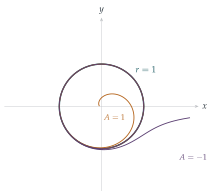

STEP III 2015, Question 8
Read the question before you go on. It is in the STEP Support Programme’s question database: step.maths.org/questions/15-s3-q8
The hook
Many systems in nature settle into a regular rhythm that does not depend on how they started: a heart beating, a cricket chirping, a violin string bowed steadily, the population cycles of predators and prey. Disturb them a little and they return to the same rhythm. In the language of differential equations, their solutions approach a closed loop, called a limit cycle.
This question constructs one. The equation looks hopeless in \(x\) and \(y\), but in polar coordinates it collapses to something you can solve, and the solutions turn out to spiral onto the unit circle, from inside and from outside. The key move, choosing coordinates that match the symmetry of the problem, is one we have used throughout the book.
Before you start
Both equations contain the combinations \(x\,\mathrm{d}x + y\,\mathrm{d}y\) and \(x\,\mathrm{d}y - y\,\mathrm{d}x\) in disguise. What are these in polar coordinates?
Since \(r^2 = x^2 + y^2\), differentiating gives \(x\,\mathrm{d}x + y\,\mathrm{d}y = r\,\mathrm{d}r\). And \(x\,\mathrm{d}y - y\,\mathrm{d}x = r^2\,\mathrm{d}\theta\) (this is the area formula from Section 4.9). These two identities make the change of variables almost painless: rewrite the equation so that only these combinations appear.
Working it through
Stage 1 Part (i) in polar coordinates
Write the equation as \((y + x)\,\mathrm{d}y - (y - x)\,\mathrm{d}x = 0\), and rearrange: \[(x\,\mathrm{d}x + y\,\mathrm{d}y) + (x\,\mathrm{d}y - y\,\mathrm{d}x) = 0.\]
Check that rearrangement by expanding. Now use the two identities above.
\((y + x)\,\mathrm{d}y - (y - x)\,\mathrm{d}x = y\,\mathrm{d}y + x\,\mathrm{d}y - y\,\mathrm{d}x + x\,\mathrm{d}x\), which is the expression above. In polar form it is \(r\,\mathrm{d}r + r^2\,\mathrm{d}\theta = 0\), and dividing by \(r^2\,\mathrm{d}\theta\) (with \(r > 0\)), \[\frac{\mathrm{d}r}{\mathrm{d}\theta} + r = 0. \qed\] The solutions are \(r = Ce^{-\theta}\): logarithmic spirals, winding in towards the origin as \(\theta\) increases and out to infinity as \(\theta\) decreases.
Stage 2 Part (ii)
The new equation is the old one plus extra terms involving \(x^2 + y^2 = r^2\). Rewrite it in the same way and find \(\frac{\mathrm{d}r}{\mathrm{d}\theta}\).
The equation is \(\bigl(y + x - xr^2\bigr)\,\mathrm{d}y - \bigl(y - x - yr^2\bigr)\,\mathrm{d}x = 0\), that is, \[\bigl[(y + x)\,\mathrm{d}y - (y - x)\,\mathrm{d}x\bigr] - r^2\bigl(x\,\mathrm{d}y - y\,\mathrm{d}x\bigr) = 0.\] The first bracket is \(r\,\mathrm{d}r + r^2\,\mathrm{d}\theta\) as before, and the second is \(r^2\,\mathrm{d}\theta\). So \(r\,\mathrm{d}r + r^2(1 - r^2)\,\mathrm{d}\theta = 0\), giving \[\frac{\mathrm{d}r}{\mathrm{d}\theta} = r^3 - r.\]
This is not linear in \(r\), but it becomes linear in \(u = r^{-2}\). What equation does \(u\) satisfy?
With \(u = r^{-2}\), \(\frac{\mathrm{d}u}{\mathrm{d}\theta} = -2r^{-3}\frac{\mathrm{d}r}{\mathrm{d}\theta} = -2r^{-3}(r^3 - r) = -2 + 2u\). So \(\frac{\mathrm{d}u}{\mathrm{d}\theta} - 2u = -2\), whose solutions are \(u = 1 + Ae^{2\theta}\). Hence \[r^2 = \frac{1}{1 + Ae^{2\theta}}. \qed\]
Stage 3 The three kinds of solution
\(A = 0\): \(r = 1\). The unit circle is a solution.
\(A > 0\): \(r < 1\) always. As \(\theta \to -\infty\), \(r \to 1\); as \(\theta \to +\infty\), \(r \to 0\). The curve spirals between the circle and the origin.
\(A < 0\): \(r > 1\), and the formula only makes sense while \(1 + Ae^{2\theta} > 0\), that is, \(\theta < \frac12\ln\left(-\frac1A\right)\). As \(\theta \to -\infty\), \(r \to 1\); as \(\theta\) approaches that bound, \(r \to \infty\). The curve spirals between the circle and infinity.
So every solution curve approaches the unit circle as \(\theta \to -\infty\), from inside or outside (Figure 8.4.1).

Looking back
Use the symmetry. The equations treated all directions alike, and polar coordinates made that visible.
Recognise standard combinations. \(x\,\mathrm{d}x + y\,\mathrm{d}y = r\,\mathrm{d}r\) and \(x\,\mathrm{d}y - y\,\mathrm{d}x = r^2\,\mathrm{d}\theta\) did most of the work.
A substitution linearises. The nonlinear equation \(r' = r^3 - r\) became linear in \(u = r^{-2}\) (a Bernoulli equation).
What’s really going on
Henri Poincaré introduced limit cycles in the 1880s while studying the qualitative behaviour of differential equations in the plane. Interpret the question’s equation as describing the path of a point moving in the plane. The unit circle is an isolated closed orbit, and every nearby orbit winds towards it (or away from it, depending on the direction of time). In 1926 the Dutch engineer Balthasar van der Pol found a limit cycle in an electrical circuit with a valve, and proposed that similar equations describe the beating of the heart. Limit cycles model any system with a self-sustained, stable rhythm: circadian clocks, nerve impulses, the cycles of predator and prey populations.
No chaos in the plane
The Poincaré–Bendixson theorem says that for a smooth system in the plane, an orbit that stays in a bounded region without approaching an equilibrium must approach a closed orbit. So in two dimensions, long-term behaviour is limited to equilibria and cycles: there is no room for chaos, because orbits cannot cross. Chaos needs at least three dimensions, as Edward Lorenz discovered in 1963 with his famous three-variable model of convection (the “butterfly”). In discrete time, as we will see in Section 8.7, chaos is possible even in one dimension.
An unsolved problem
In 1900 David Hilbert asked, as part of his sixteenth problem: what is the largest number of limit cycles that a system \(x' = P(x, y)\), \(y' = Q(x, y)\) can have, when \(P\) and \(Q\) are polynomials of degree \(n\)? It is still unknown even for \(n = 2\), where systems with four limit cycles are known and it is not known whether more are possible. It is one of the very few of Hilbert’s problems that remain completely open.
The thinking skill
If a problem has rotational symmetry, use polar coordinates; if it has another symmetry, find coordinates that respect it.
The right coordinates turned an intractable equation into a separable one, and made the geometry of the solutions (circles and spirals) obvious.
Try this next
The spiral. For the solution \(r = e^{-\theta}\) of part (i), show that the curve crosses every ray from the origin at the same angle, \(45^\circ\). (This is why logarithmic spirals are called equiangular.)
Polar identities. Prove that \(x\,\mathrm{d}x + y\,\mathrm{d}y = r\,\mathrm{d}r\) and \(x\,\mathrm{d}y - y\,\mathrm{d}x = r^2\,\mathrm{d}\theta\).
A system in time. Consider the system \(\dot r = r(1 - r^2)\), \(\dot\theta = 1\). Show that every solution with \(r(0) > 0\) approaches the unit circle as \(t \to \infty\). Write the system in terms of \(x\) and \(y\).
Two cycles. Find a system of the form \(\dot r = f(r)\), \(\dot\theta = 1\) with two limit cycles, at \(r = 1\) and \(r = 2\), one attracting and one repelling.
Further reading
Steven Strogatz, Nonlinear Dynamics and Chaos (CRC Press). Chapter 7 is about limit cycles and the Poincaré–Bendixson theorem.
Steven Strogatz, Sync (Hyperion). A popular book about rhythms and synchronisation in nature.
James Gleick, Chaos: Making a New Science (Penguin). The story of Lorenz and the discovery of chaos.